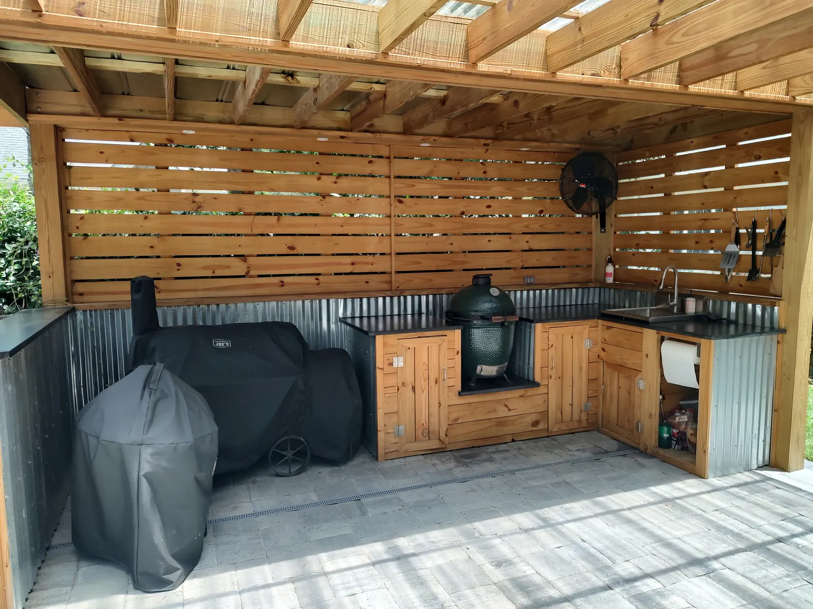
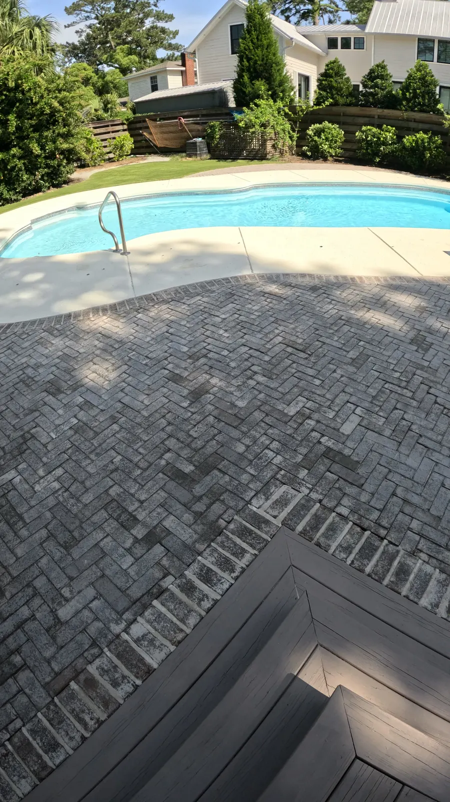
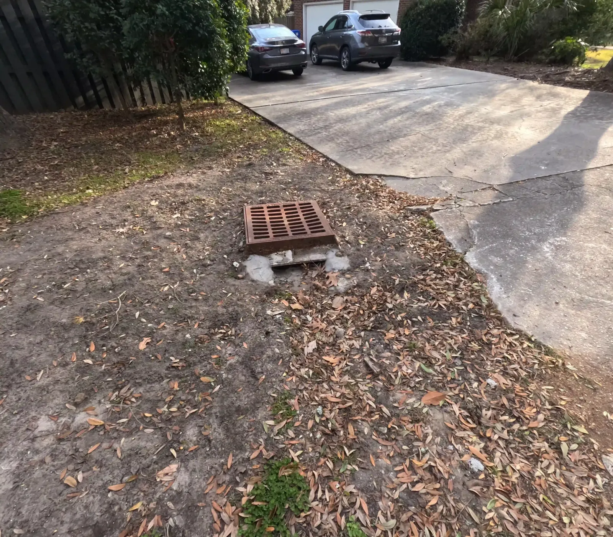

Landscaping & Outdoor Living on James Island, SC

Local & Family-Run
James Island Landscaping and Outdoor Living, Built Around How You Use the Yard
Cramers Landscaping is a family company. Doug Cramer has worked in landscaping his whole life, with more than 30 years of experience, and his son Zach is our licensed residential builder. Doug and Zach design every project themselves, and our own crew builds it.
On James Island that has meant an outdoor kitchen built for barbecuing, a pool yard redone in brick and turf, storm drains rebuilt after they collapsed, and a fountain set under a Japanese maple. The jobs below are all real James Island projects.
A Rustic Kitchen Built for Barbecue
The brief for this James Island outdoor kitchen was simple: build it around barbecuing and grilling, and give the whole family a counter to gather at while the cooking happens.
The counter and the bar are black leathered granite. It is one of the most popular countertops we install, and granite holds up best outdoors.
Most of our outdoor kitchens run $8,000 to $20,000 or more. Appliances are usually the biggest part of that, and we add no markup to them. The most common build is a straight run with a grill, cabinets underneath and a refrigerator. The usual additions are a bar top, a sink, a second fridge, a flat-top griddle or Big Green Egg, and sometimes a pizza oven.


A Pool Yard in Brick and Turf

We reworked everything around this pool. The new patio is brick laid in a herringbone pattern. The owners chose brick because it matched the house, and it was affordable too. The lawn is artificial turf, chosen because it is low maintenance and works for them and their dogs. For dogs we build turf with a high-permeability backing, antimicrobial infill and a well-draining base.

The concrete pool deck was the other problem. Its finish was flaking off and some sections had cracked. We replaced the concrete that was past saving and refinished the rest, then cleaned up the beds and added plants and mulch.
Smaller Jobs Count Too

Collapsed storm drains, rebuilt
Not every job is a new build. At one James Island house the storm drains had all collapsed and the pipe behind them was clogged. We cleaned out the pipe and rebuilt the basins.
Catch basins drain the low spots in a yard. Drainage is always quoted after walking the property, because the cost depends entirely on what is causing the water.

A fountain under a Japanese maple
Not every water feature is custom. This one is a concrete kit fountain, set into the planting under a Japanese maple. A simple fountain kit starts around $1,000, and custom work runs up to $30,000. A fountain covers traffic noise and gives a small courtyard a center.
Building on James Island
James Island is split between the Town of James Island, the City of Charleston and unincorporated Charleston County, so where your permit is filed depends on your address. We pull permits ourselves as part of the build. Roofed structures like a pergola or pavilion usually need one, as do taller retaining walls and most gas, electrical or plumbing work, though an outdoor shower does not. Small ground-level patios usually don’t.
Much of the island is low, with marsh and tidal creeks close by, so water is a common problem. We fix drainage before building anything where water collects, and lots near marsh or a tidal creek can carry wetland permitting. Mature live oaks are common here too, and they are protected. The Town of James Island counts any tree of 18 inches or more in diameter as a grand tree, other than pines and sweet gums, while the City and County parts of the island use 24 inches.
Shade under those oaks is hard on lawns. St. Augustine is the best sod for it, and artificial turf is the answer where grass keeps failing. For landscape lighting we start with paths and steps, because that is the safety case, then one good tree.
James Island Rules by Address
Because the island is split between the Town of James Island, the City of Charleston and the County, the rules depend on your address. In the Town of James Island:
- Fences can be 4 feet in a front or street-side setback and 8 feet in a side or rear setback.
- Detached structures like a pavilion or cabana go behind the house, at least 6 feet from it and 3 to 5 feet from the lot lines, and no more than 25 feet tall.
- Grand trees are 18 inches or more, other than pines and sweet gums, and paving can cover no more than a quarter of a protected tree’s root zone. That matters for any patio or driveway near an old oak.
The older neighborhoods have real character. Riverland Terrace dates to the 1920s and is known for its avenue of live oaks along Wappoo Creek, and much of the island is brick ranch houses with newer homes on the water. Big oaks and older yards bring the usual work: drainage, overgrown beds and lighting worth doing.
Rules as published when we checked in 2026. Guidelines change, and the board or town always has the final say, so we confirm the current rules for your property before a design is final.
Every Service We Offer, Available On James Island
The projects on this page are only part of what we do. We offer all of our services on James Island, designed by Doug and Zach and built by our own crew. From the first site visit to the final walkthrough, here’s how a project works.
- Landscaping: landscape design and installation, plants and trees, sod, artificial turf, irrigation, drainage and grading, landscape lighting, mulch and bed edging, fountains and water features
- Hardscaping: patios and pavers, concrete and driveways, retaining walls, fire pits, pool decks
- Outdoor Structures: pergolas, pavilions, outdoor kitchens, outdoor fireplaces, outdoor showers
Worth knowing before you start
- Retaining walls: Block with a stucco finish is what we build most, and it starts around $50 per square foot of wall face. Height drives the price more than length, because a taller wall needs a bigger footing and more steel.
- Landscape lighting: About $200 a light, plus a transformer. We light paths and steps first, because that is the safety case, then one good tree, then the structure itself. We recommend a timer over a photocell, and soft white is the most common color temperature.
- Sod: Sod is $750 a pallet installed, not including digging out the old grass or regrading. Zoysia is soft and handles pets and foot traffic. St. Augustine is the best choice for shade under live oaks.
- Outdoor showers: Outdoor showers run $6,000 to $15,000, built in pressure-treated lumber or sapele. We plumb them hot and cold. A cold-only shower gets used about six weeks a year.
Small jobs are welcome too. There’s no minimum job size.
Projects We’ve Built in James Island
Open a project for the full story and photos.


What Projects Typically Cost
| Outdoor kitchen | $8,000 – $20,000+ |
|---|---|
| Paver patio | around $18 per sq ft |
| Artificial turf | from $13 per sq ft |
| New concrete pool deck | about $12 per sq ft |
| Fountain | kits from about $1,000 |
Ranges are typical, not quotes. Size, materials, site conditions and finishes move the number. You’ll get an exact price after the consultation.
Frequently Asked Questions
Do you work on James Island?
Yes. We’ve built an outdoor kitchen, redone a pool yard with brick, turf and a refinished pool deck, rebuilt collapsed storm drain basins and set fountains on James Island. The consultation is free, and Doug or Zach comes out in person.
Can you refinish a concrete pool deck instead of replacing it?
Often, yes. On a James Island pool deck the finish was flaking off and some sections had cracked. We replaced the concrete that needed replacing and refinished the rest. Resurfacing is quoted on the deck’s condition, so we look at it first.
Is artificial turf good for dogs?
Yes, and it is one of the best uses for it. The James Island family on this page chose turf because it is low maintenance and works for them and their dogs. Turf starts from $13 per square foot, including the base preparation.
Do you take small jobs on James Island, like a drain repair?
Yes. The storm drain job on this page was a repair: the basins had collapsed and the pipe was clogged, so we cleaned out the pipe and rebuilt the basins.
Talk to Doug or Zach About Your Yard
Tell us what you have in mind for your James Island property, and we’ll set up a consultation at your home.